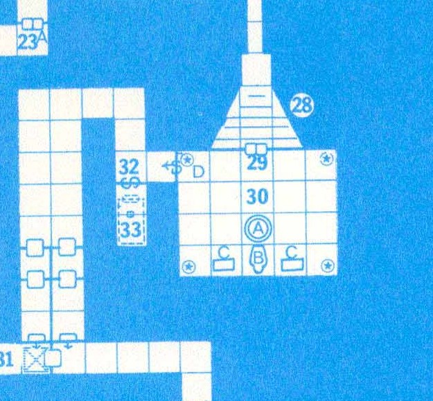
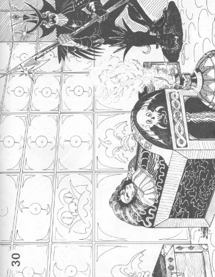

In the novel Ready Player One, the main character Wade Watts goes on an adventure in the virtual reality world of the Oasis to find the copper key. The copper key will allow him to take one step further in becoming the winner of the easter egg hunt put forth by the original creator of the Oasis, James Halliday.
Wade realizes that the copper key is on the planet Luda, where his high school is located. This allows him to search for the key even though he doesn't have any money.
During his Latin class, Wade discovers that on Luda there must be a replica of the classic Dungeons and Dragons module The Tomb of Horrors.
The Tomb of Horrors module is basically about exploring the tomb of a long-lost demilich named Acererak, which is a hint at the Oasis creator's username, Anorak.
In the novel, Wade goes through the Tomb of Horrors to search for the copper key. From my interpretation, this is the room where Acererak was supposed to be, but he was instead in the room right before this one.
The map of the Tomb area from the original module documentation
For my creative artistic representation of this set of chapters, I have made a video showing the Tomb in 3D form.
In the video, you can see the four guards, which are the stars in the corners of the tomb room on the map. You can also see the two chests on either side of the casket (where all the treasure is supposed to be). Lastly, you can see the casket in which Acererak lies.
Here is a drawing of a similar view of the room from the original module itself:
